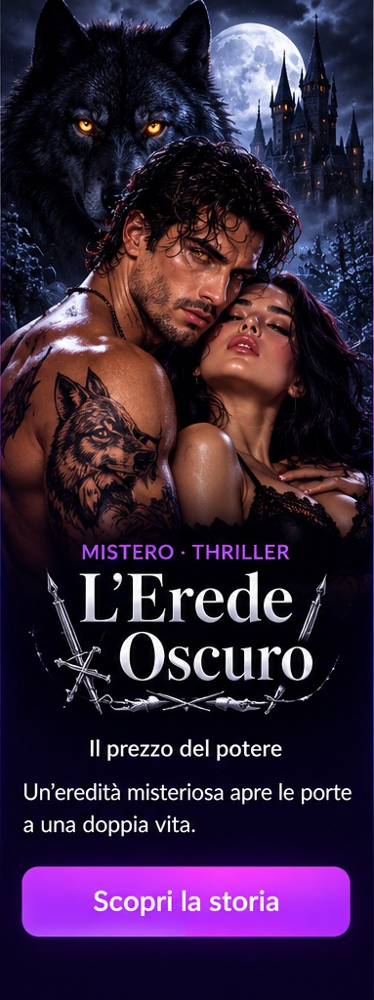
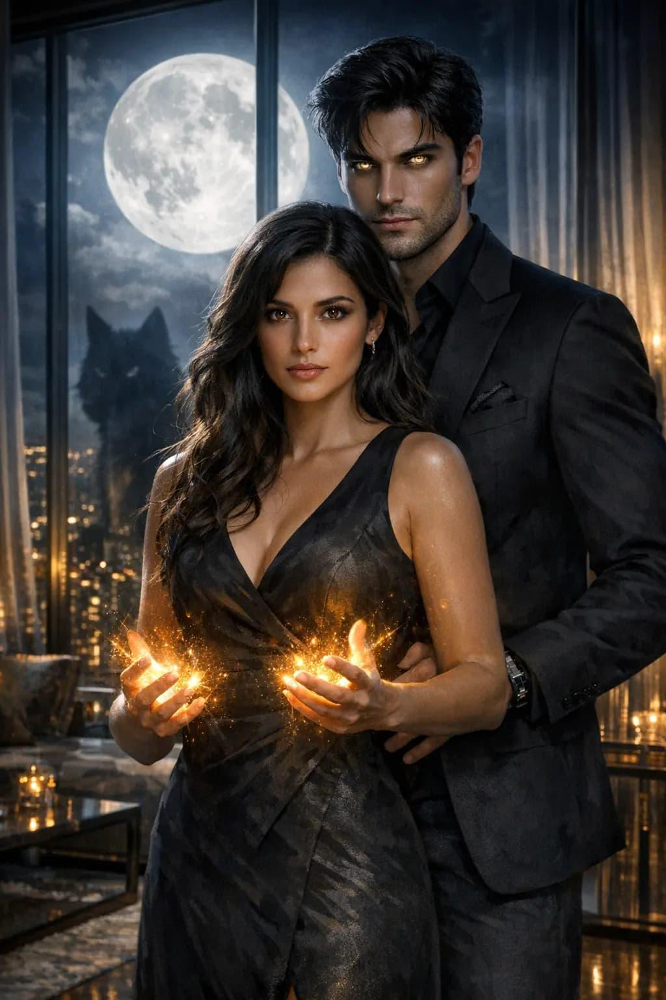
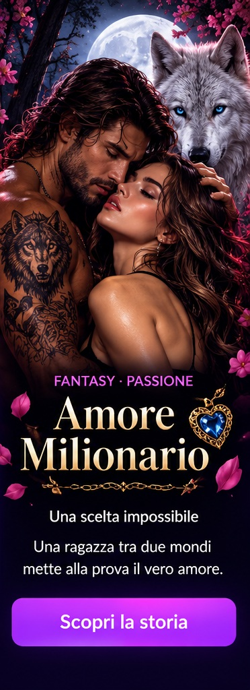

Romantico
Il segreto del cuore
Un incontro inaspettato cambia il destino di due cuori.
Amore, segreti, emozioni e colpi di scena.
Entra in un mondo dove ogni storia nasconde un mistero.
Inventa una nuova trama e un primo episodio originale.
Un incontro inaspettato cambia il destino di due cuori.

Una ragazza scopre un potere che nessuno avrebbe dovuto conoscere.

Una promessa antica lega due anime e un segreto oscuro.

Due persone si ritrovano quando ormai tutto sembra perduto.

Dietro una porta dimenticata esiste un altro mondo.

Una lettera rivela una verità nascosta per molti anni.